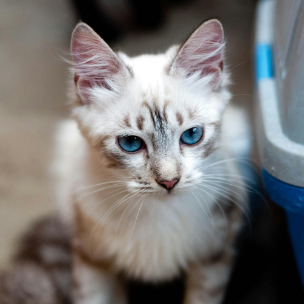

Malu
📅 6 meses | Pequeno porte | Fêmea
Malu é uma fofura tranquila que adora tomar sol e cochilar nas tardes quentinhas. Tem um jeitinho calmo e carinhoso, perfeita para quem busca uma companheira doce e serena.

Eduardo
📅 3 anos | Macho
Eduardo é um carinha tranquilo e reservado. Gosta de ficar na dele, mas quando se sente à vontade, adora receber carinho e estar por perto, te segue pra todo lado como um companheiro fiel. Um amigo calmo, leal e cheio de amor.